Fretboard
The neck is the one thing that never moves. Everything else — the sentence, the timeline, the chip bars, the floating tools — arranges itself around it.
Layout
Six strings, low E at the bottom to high e at the top, and 15 frets plus the open position to start with. Fret numbers run along the neck, with the usual inlay frets — 3, 5, 7, 9, 12, 15, 17, 19, 21 — called out so you can find your place at a glance.
Set the neck to your own guitar with Frets at the left of the marker display bar: anywhere from 12 to 22.
The neck always fills the width it is given and never scrolls sideways, so a longer neck draws narrower frets and slightly smaller markers rather than running off the edge — though never markers too small to read and tap. A window too narrow for every fret you chose draws fewer instead, counted from the nut: as many as it can draw at that size. The Frets stepper stops there, and your choice is kept, so widening the window brings the rest back. The Mac, and an iPad full screen in landscape, always have room for all 22. To work a span of the neck rather than shorten it, use the fret range limiter — that frames a position on the board you have, while Frets changes how much board there is.
Side marks. Like the side dots on a real neck, short marks run along the bass edge of the board, just below the low E string, at 3, 5, 7, 9, 12, 15, 17, 19 and 21 — and the octave at fret 12 wears a pair. They sit outside the strings, so a mark can never touch or hide a note, and they wear the same brown and jade as the fret numbers above the neck, so the two always agree on where you are. They are short flat dashes rather than dots, because a dot is what a note marker is.
String names. A narrow lane on the leading edge names each string — e, B, G, D, A, E from the top down — with the six letters sharing one right edge, and a gutter between the names and the strings they name.
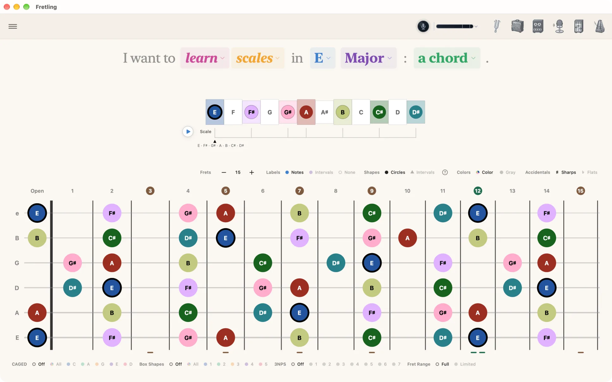
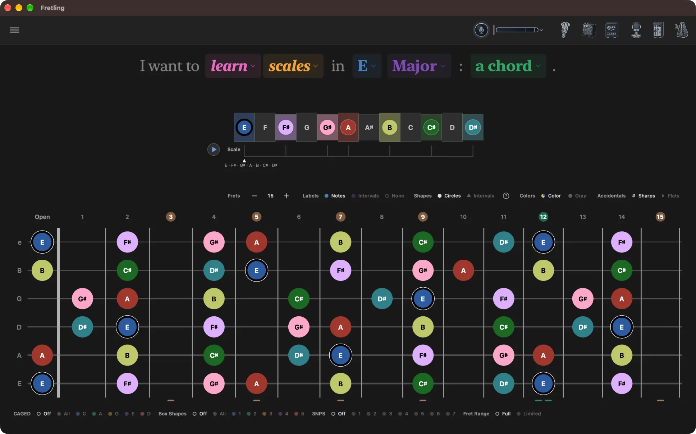
Marker display bar
Directly above the neck sits a row of chips that changes how markers read. These are the settings you reach for constantly, so they are always visible rather than buried in the sidebar.
| Group | Chips | What it does |
|---|---|---|
| Frets | − / + | How many frets the neck draws, from 12 to 22 — set it to match your own guitar. The default is 15. This is the one group that is a stepper rather than a row of chips, and it leads the bar because it describes the board rather than the markers standing on it. |
| Labels | Notes / Intervals / None | Notes prints note names (G, A♯). Intervals prints each note's interval from the root — R, m2, M2, m3, M3, P4, T for the tritone, P5, m6, M6, m7, M7. None leaves bare dots — useful for testing yourself. |
| Shapes | Circles / Intervals | Circles draws every marker the same. Intervals gives each degree its own outline, counting corners — a circle for the root, three for a 3rd, up to seven for a 7th — so the root reads differently from a third even in Gray. The ? after the two chips opens What the markers mean: a key to every mark the neck draws in the learn mode you are in — Scale note and Key root in Scales — and, with Shapes on Intervals, the ladder of outlines. |
| Colors | Color / Gray | Color gives each interval its own color, so a degree is recognizable before you read it. Gray makes every marker the same, which keeps shapes and geometry in focus. |
| Accidentals | ♯ Sharps / ♭ Flats | Whether black-key notes read as F♯ or G♭. It follows the key you are in until you set it yourself: F Major spells B♭ rather than A♯, and C Mixolydian follows F Major, whose notes it uses. Tap either chip, including the one already lit, and that spelling is yours from then on, in every key. Only meaningful when labels show note names, so this group dims — but stays visible — when Labels is set to Intervals or None. |
Every group except Frets is radio-style: one chip is lit, and tapping the lit chip does nothing — except in Accidentals, where it makes the key's spelling yours. On a narrow window the bar scrolls sideways instead of wrapping, fading out at whichever end has more chips past it. In an iPad window too short for two rows of chips, the bar and the Visual Groupings share one row and scroll sideways together.
Short windows. In an iPad window too short to hold everything, the neck keeps its room, and what normally sits above it — the scale timeline, or the card for Identify — moves into a panel that pulls up over the neck. The panel starts closed. A chip at the end of the row above the neck opens it, named for what it holds, such as Timeline or Identify; tap the chip again, or drag the panel's handle down, to close it. The chip stays put while the rest of the row scrolls. When the card plays something, such as a progression, a Play button sits beside the chip, so you can start and stop it without opening the panel. Closing the panel never stops anything that is playing.
The defaults are Labels Notes, Shapes Intervals and Colors Color, on 15 frets, with Accidentals following the key. Every one of them is remembered between launches.
How the interval shapes are built: they are a ladder, not a set of glyphs to memorize. The root is a circle; the 2nd is that circle broken once; from the 3rd up, the degree is the number of corners — three for a 3rd, four for a 4th, and so on to seven for a 7th. A flattened or sharpened degree keeps its shape and leans, one way for lowered and the other for raised, so there are two rules to learn rather than twelve symbols.
Three of the four marker groups reach past the neck. Labels, Colors and Accidentals also set how the scale timeline and the Chord Atlas read, so a pitch is named, spelled and colored the same way wherever you meet it. (The Atlas keeps note names when Labels is None — a picker whose options carry no label has nothing to pick by.) Shapes is the neck’s alone: the timeline and the Atlas draw round markers.
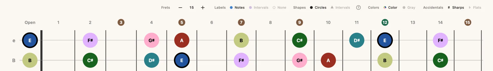
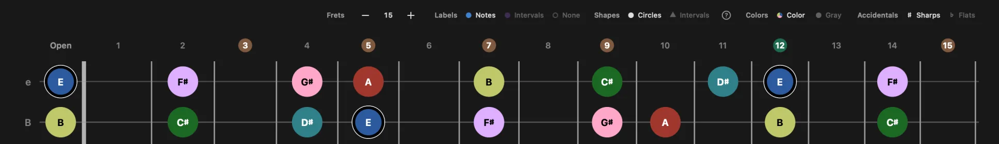
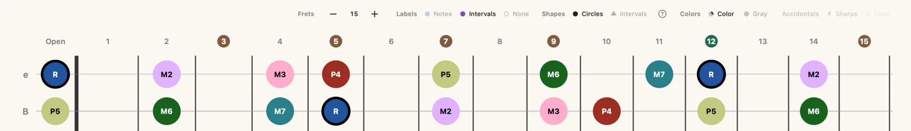
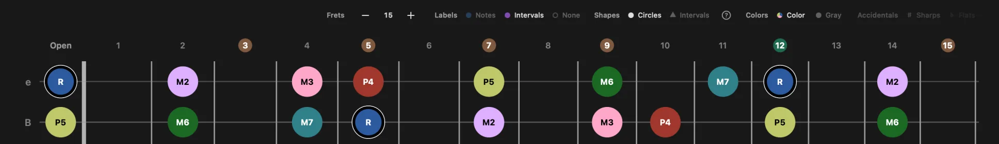
Note markers
Markers show which notes belong to the current scale, chord, or triad. Everything about how they read — their labels, shapes, colors and accidentals — is set on the marker display bar above the neck. The root note is always emphasized against the other tones.
The two shots below show the Shapes group at work.
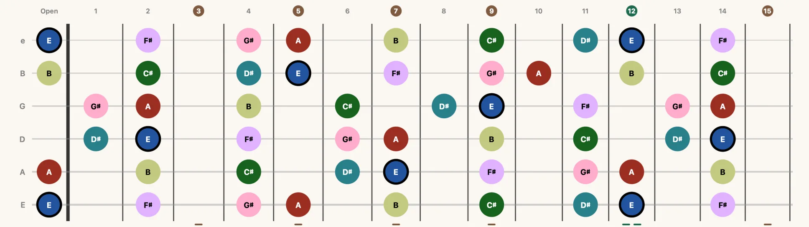
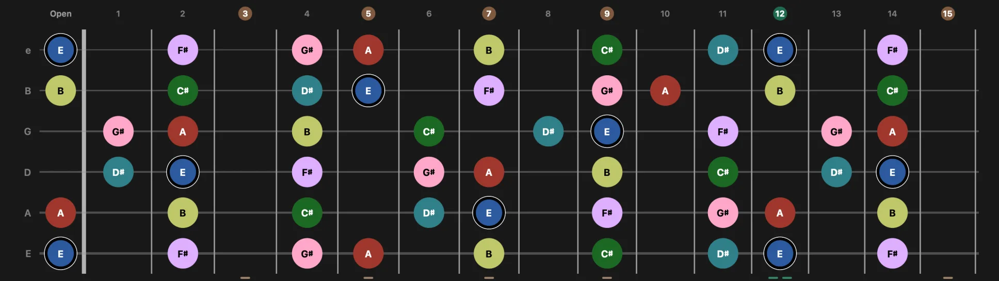
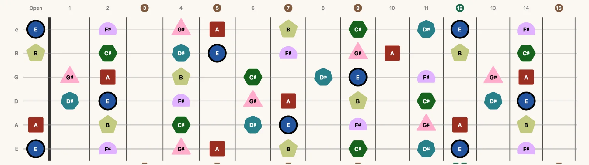
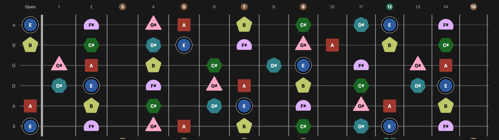
The interval wheel
With Colors set to Color, a marker’s fill is its distance from the key’s root — the same twelve colors everywhere in the app, so a major third looks like a major third whatever key you are in. That root is the one anchor: the neck, the timeline and the Chord Atlas all measure from it, and it stays the key’s root even while a chord is active, so a pitch keeps a single color across all three. Switching the root recolors the whole neck; switching the scale type does not.
- RootUnison
- Minor 2ndOne semitone
- Major 2ndTwo semitones
- Minor 3rdThree semitones
- Major 3rdFour semitones
- Perfect 4thFive semitones
- TritoneSix semitones
- Perfect 5thSeven semitones
- Minor 6thEight semitones
- Major 6thNine semitones
- Minor 7thTen semitones
- Major 7thEleven semitones
Chord tones are never hidden. When Chords mode shows a chord against a key, notes belonging to the chord stay drawn even if they fall outside the scale. Altered chords, borrowed chords, secondary dominants and slash-bass notes therefore show up as they really are, rather than being filtered out by the key. (A chord added in Scales mode is context only: it never reaches the neck, which stays the scale.)
Scale timeline
Above the neck, the timeline lays out all twelve semitones in a row. Notes that belong to the current scale are filled in; the rest sit faded. When a chord is active, its tones are marked too, so you can read the chord against its key in one line.
The row starts at whatever you are learning, so it never splits in two. In Scales the leftmost key is the key you picked, and the scale climbs from there — set Labels to Intervals and you can read the intervals straight across, R first. In Chords the chord takes the front of the row instead, and the key's scale shifts around it.
Horizontal rails bracket the row to show the structure: the chord's tones are tied together above it, the scale's below. Small Chord and Scale captions name each rail, and triangles mark each root.
In Triads there is no scale to map: the row starts at the triad's root, its three tones are filled and the rest stay empty, and only the Chord rail appears, with its transport.
Tap a key to hear that pitch. Every marker of that note on the neck lights up, and stays lit until you tap another key.
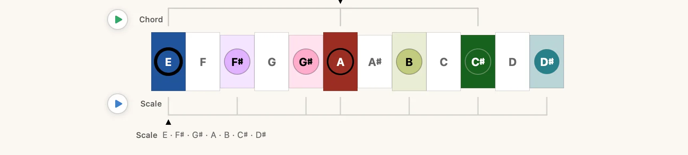
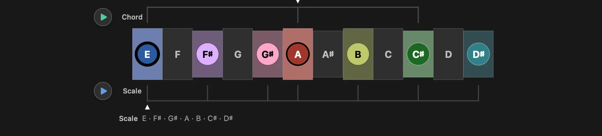
Timeline transports
At the leading edge of the timeline stand up to two round transports, each on the rail it plays — the Chord transport beside the chord rail above the row, the Scale transport beside the scale rail below it. Press one to make sound, press it again to stop; a transport that is sounding fills in solid.
- Scale — plays one octave of the scale, root to root, up and back down, once: one note per beat at the metronome's tempo, each lit on the neck as it sounds. It starts on the lowest root inside what the neck shows — the fret range and any pattern you have on. With several patterns on it plays one: the 3NPS pattern if there is one, otherwise the CAGED shape, otherwise the box. A box drawn more than once on a long neck plays its lowest copy.
- Chord — holds the chord on the chord pad until you press it again.
A transport is mounted on a rail, so a rail is all it takes for one to appear: the Scale transport is there whenever a scale is on the timeline, the Chord transport whenever a chord is active. That includes Triads, where the transport sounds the triad on screen.
On the Mac, Shift-Space presses whichever of the two is on screen — the chord if one is active, otherwise the scale. The plain space bar is the app's own transport: it stops whatever is rolling, and when nothing is, it starts the click together with a loop that is loaded and stopped. See keyboard shortcuts and gestures.
Under the row, a single tone line spells what the transport is about to sound. It follows the subject of the mode you are in — the chord in Chords and Triads, the scale in Scales — except while something is playing, when it follows the sound instead. When both transports are up it puts Scale or Chord in front, so you can tell which one it is describing.
The scale's line is spelled from the notes that will actually be struck, so narrowing the fret range or switching on a box narrows the line the same way it narrows the run. If the visible range holds no playable notes, the line says No notes in this fret range rather than leaving you to press a dead button.
The spelling follows the rest of the app: Labels decides whether you read note names or intervals, and Accidentals whether they are sharp or flat. It answers a different question from the timeline above it — the timeline maps the key, the tone line says what this one transport will sound.
Visual Groupings: overlays and boxes
Directly below the neck, a matching chip bar draws pattern systems over what is already there. Which groups appear depends on the mode you are in.
The row is wider than a narrow window can hold, so it breaks on purpose rather than truncating: the switches you flip mid-practice — Fret Range, and Non-Chord Notes in Chords — stay pinned in place while the pattern systems scroll behind them. Where content really is cut off it passes under a soft fade, so a sliced chip reads as more row rather than damage.
Chord Shapes (Chords)
Off / On. Turns the chord-shape overlays on the neck on and off — see Chord shapes below for what they draw and the settings that go with them. It leads the row and starts On: in Chords the chord is what the neck is drawing, so its own voicings are the first system you reach for, and CAGED and the boxes are context laid over it.
CAGED
Off / All / C / A / G / E / D. Overlays one of the five CAGED shapes — or all of them at once — on the current scale, chord, or triad. Available in every learning mode, as one selection: the shape you pick in one mode is the shape every mode shows.
The grips follow the subject. A major subject gets major grips and a minor subject gets minor ones, so a minor scale never wears major boxes. Where the subject has no major or minor triad to grip — a diminished or augmented chord, a suspended chord, a Locrian key — the whole CAGED group disappears from the row rather than sitting there drawing nothing. Change to a subject that has one and the group returns with your selection intact.
How a shape is drawn is set in Settings → Fretboard → Shape Overlays → CAGED Display:
- Box — the outline of the shape's region.
- Lines — connecting lines through the shape's notes.
- Both — outline and lines together.
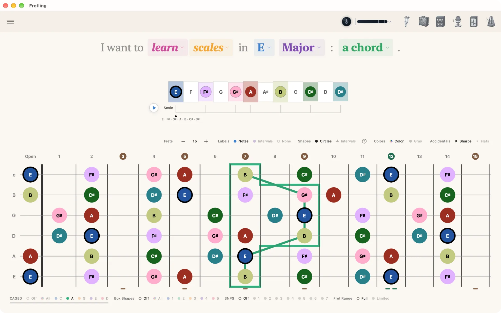
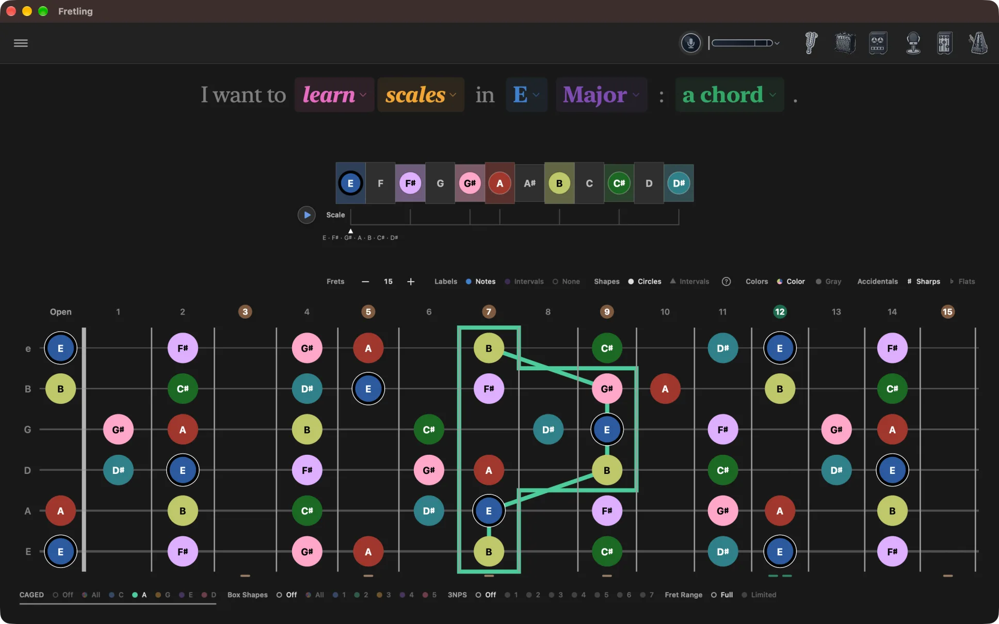
Box Shapes
Off / All / 1 / 2 / 3 / 4 / 5. Outlines one of the five position boxes on the neck, or all five at once. Whose boxes they are depends on the mode. In Scales they belong to the scale you chose — each of the twelve scales has its own five, so a Major scale gets the major positions rather than a pentatonic stand-in. In Chords they are the key’s positions, drawn under the chord. In Triads they come from the pentatonic that fits the triad: major pentatonic for major and augmented, minor pentatonic for minor and diminished.
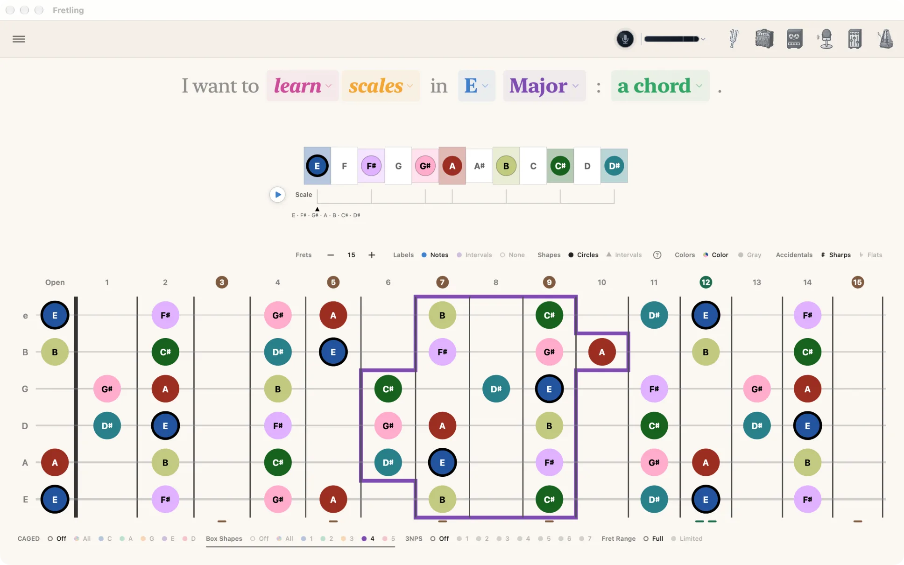
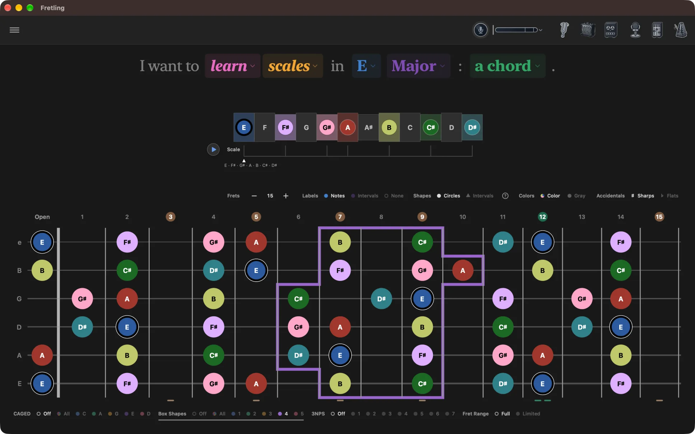
3 Notes Per String
Off / 1 … 7. Scales mode only. Draws a pattern with three scale notes on every string. How many patterns exist depends on the scale — a seven-note scale gives seven, and smaller scales offer fewer.
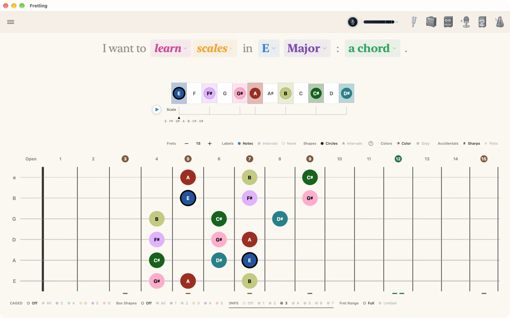
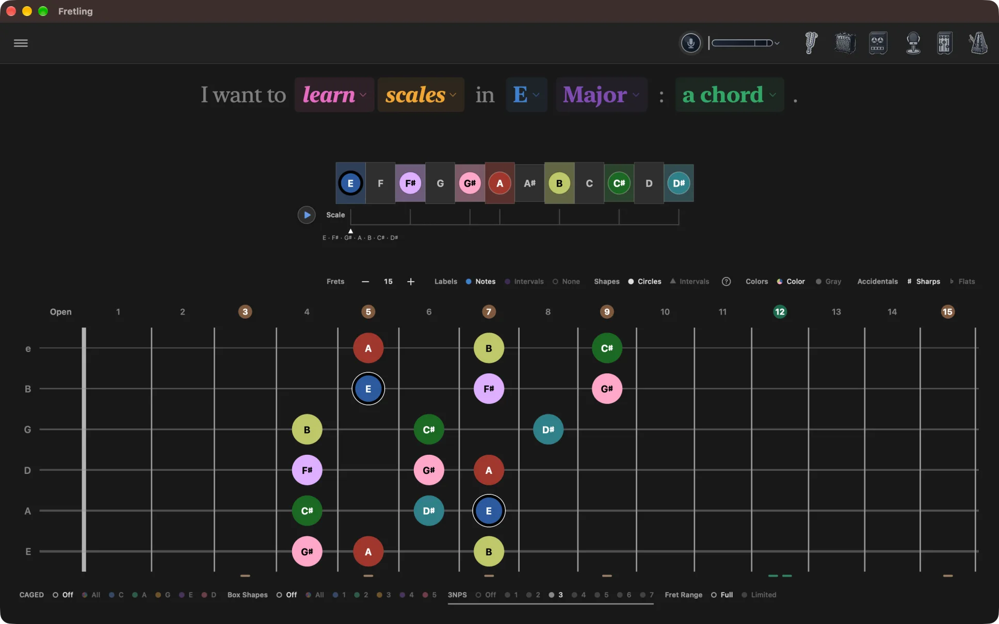
Strings
All / 123 / 234 / 345 / 456. Triads mode only. Narrows the neck to one set of three adjacent strings so you can work a triad shape without the rest of the neck competing for attention. Strings are numbered from the thinnest: 123 is G, B and high e, 234 is D, G and B, 345 is A, D and G, and 456 is low E, A and D. All, the default, shows every string.
Triad lines go with a string set. They are not a chip: switch them on with Show Triad Lines in Settings → Fretboard, and on the chosen string set a line runs through each triad voicing, the same connect-the-dots grammar the CAGED overlay uses. Only voicings one hand can hold get a line, so a tone that belongs to no shape stays marked without one. With Strings on All there is no string set to draw on, so no lines appear.
Non-Chord Notes
Off / On. Chords mode only. Off, the default, shows the chord's tones, plus the key's root in gray, ringed, when there is a key. On keeps the rest of the key's scale visible underneath in gray, so the chord reads inside its key rather than floating on an empty neck; without a key there is no scale to show, so On fills every other fret in gray. While chord shapes are drawn, the gray notes wait until you tap All in the shape legend.
Fret Range
Full / Limited. Every mode. Limited frames a position window on the neck so you can work a span of frets; Full gives the whole neck back. While the window is up, the group carries a third chip reading the span — 3–8 — which opens as a menu of named positions. A named position that would reach past the end of your neck is dropped from that menu rather than squeezed to fit: a 12th position crushed into two frets is not the 12th position.
Underlines
A group that is actually drawing something on the neck carries a slim rule under its name. It is the row's answer to a question that is otherwise hard to ask — with three pattern systems available, which of them am I currently looking at? A group left at Off — or Strings at All, Fret Range at Full — draws nothing and carries no rule. All in CAGED and Box Shapes draws every shape, so it carries the rule.
Chord shapes
In Chords mode, the Chord Shapes group in the Visual Groupings bar draws real, playable fingerings for the selected chord on the neck, each in its own color, taken from an open chord-fingering database. It starts On; set it to Off to hide them. Two settings in Settings → Fretboard → Shape Overlays shape how they behave:
- Show Finger Numbers — prints which finger plays each note.
- CAGED Interaction — decides what happens when chord shapes and CAGED overlays are both switched on:
- Coexist — draw both.
- Exclusive — chord shapes win; CAGED hides while shapes are on.
- Replace CAGED — chord shapes stand in for CAGED entirely, and the CAGED chip group disappears from Visual Groupings.
The legend. A row between the neck and the chip bar lists the shapes drawn, by position — open, fret 5 — each with a dot in its color, after an All chip. Tap a shape to hide or show it. While All is off, as it starts, the neck shows only the notes of the lit shapes: the chord's other tones, the key's root and the gray notes of Non-Chord Notes wait until you tap All, which brings every chord tone back. A new chord resets the legend. It carries the same Chord Shapes caption as the switch, because it lists the same system: turn the switch off and the legend goes with it.
Eleven chord types have no fingerings in the database; the Chord Atlas leaves them out while Chord Shapes is on — see the Chord Atlas.
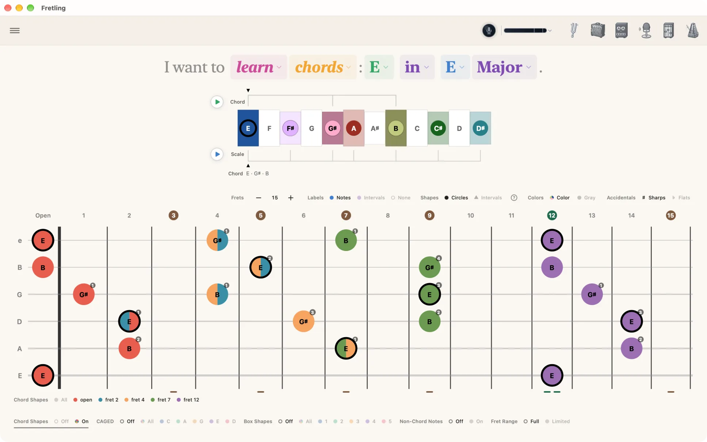
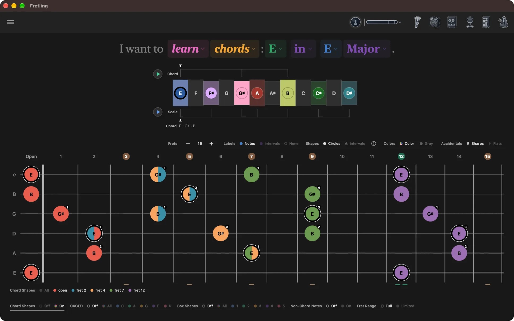
Fret range limiter
Set Fret Range to Limited in the Visual Groupings bar and a position window is drawn on the neck itself — a framed span with a slim grab tab on each edge. The frets outside it are dimmed and draw no markers: only the window holds notes. The wood is dimmed rather than left bare because set aside and not in the scale must not look alike.
- Drag an edge tab — moves that boundary, snapping to the nearest fret line.
- Drag the fret numbers inside the frame — slides the whole window along the neck without changing its width.
- Double-tap an edge tab — opens the window out to that end of the neck.
The boundary frets name themselves as blue chips in the number row, on the same disc the landmark numbers wear. The frame is never filled in: it claims the span with its edge alone, so the markers it is drawn around stay exactly as legible as they were — and every note inside it stays tappable.
While the window is up, the Fret Range group carries a value chip reading the span — 3–8. It is also a menu: open it to jump straight to a named position — Open, 3rd, 5th, 7th, 9th or 12th — the ones that fit on the neck you have. Scale playback follows the window too.
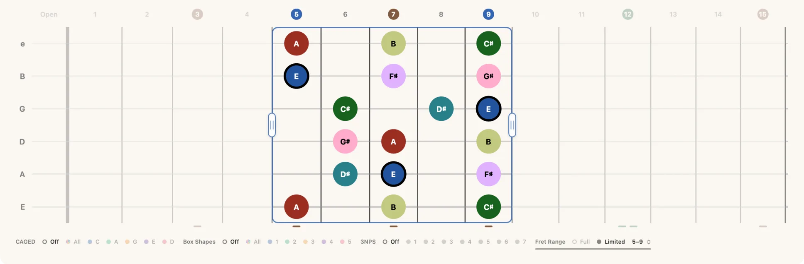
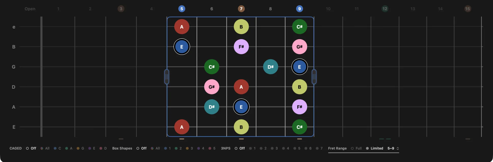
Tap to play
Tap any visible marker to hear that note, using the instrument set in Settings → Audio. On iPad and iPhone the neck is fully multitouch: hold several notes at once to sound a chord, and slide a finger along the neck to move the sounding note with it. Only visible markers respond, so tapping empty wood stays silent.
A press sustains; a lift stops it. Hold a marker and the note is held for as long as you hold it. Let go and it stops — but never before it has rung for a second and a half, so a quick tap sounds like a pluck rather than a blip. Sliding off a note stops it at once, the way lifting a fretting finger does.
Notes light up while they sound — a marker you are holding, each note of a Scale transport run, and a note picked on the timeline — and notes recognized by Live Detect are ringed, so you can see what you just played. The Chord transport lights nothing.
On the Mac, the pointer turns to a hand over anything that responds to a click — a marker, a chip, a panel header — so the neck says what is live before you press it. Hovering a chip row lights the chip you are about to hit.
With VoiceOver, each string is one control. Swipe up or down to move along it, and double-tap to play the note — or, in Identify, to place or remove it.